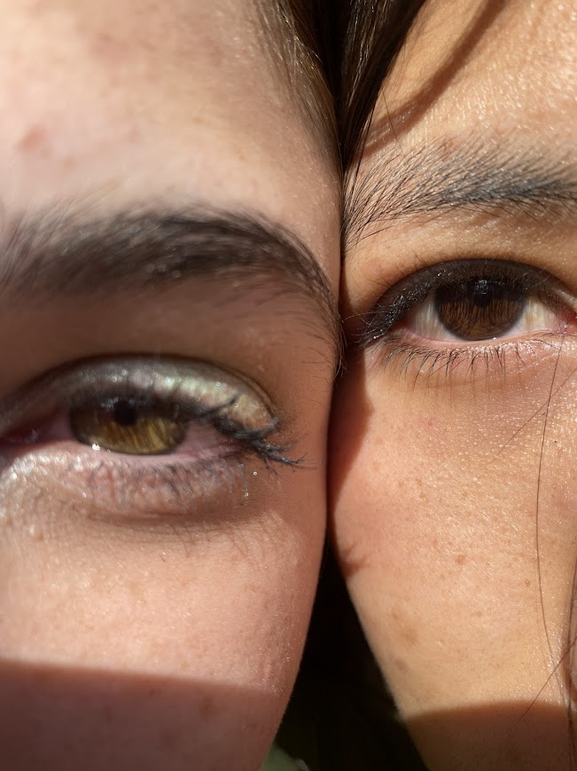
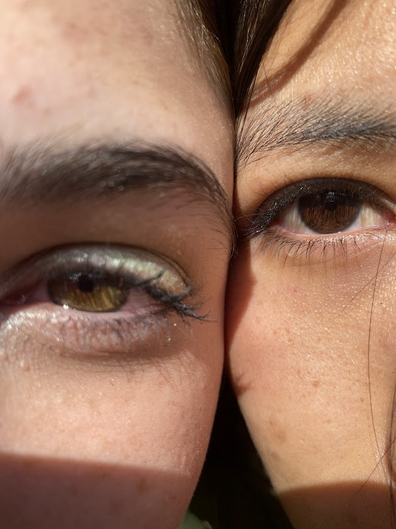

Ese día mi vida cambió,
porque conocí a Euge,
y desde entonces todo es más rosa,
más brillante, más feliz. üå∏
Gracias por estar en mi vida,
por ser mi amiga,
mi confidente,
y la persona con quien comparto
los mejores momentos üíñ.
¡Feliz aniversario de este amor que solo crece, bb!
Te quiero con todo mi coraz√≥n üíïüåà
Te amo, te amo, te amo, te amo, te amo, te amo, te amo, te amo, te amo, te amo, te amo, te amo, te amo, te amo, te amo, te amo, te amo, te amo, te amo, te amo, te amo, te amo, te amo, te amo, te amo, te amo, te amo, te amo, te amo, te amo, te amo, te amo, te amo, te amo, te amo, te amo, te amo, te amo, te amo, te amo, te amo, te amo, te amo, te amo, te amo, te amo, te amo, te amo, te amo, te amo, te amo, te amo, te amo, te amo, te amo, te amo, te amo, te amo, te amo, te amo, te amo, te amo, te amo, te amo, te amo, te amo, te amo, te amo, te amo, te amo, te amo, te amo, te amo, te amo, te amo, te amo, te amo, te amo, te amo, te amo.

 
